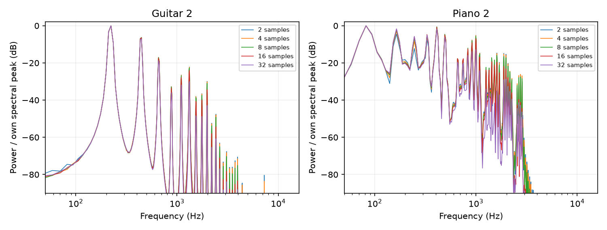

48 kHz；使用当前正式 BIN 中的系数、琴体与包络。只改变上升采样数；钢琴 PW_LEN+GAP_LEN 保持 480。试听按每种乐器、每个场景的有效段 RMS 拉齐；native/ 保存固定标尺 PCM16。未更改生产资源或 RTL。
增加上升采样数会拉长触弦时间，不代表提高采样率。各档力度目标相同，激励面积和频谱不同；本轮没有重新标定 G。
钢琴存在现有计数偏差：后续击锤从 cnt=0 开始，比首锤多累加一次。2采样档第二锤实际峰值为目标A的1.03125，32采样档为0.708984；实际击锤起点间隔为481/482采样。本轮保留该行为，因此钢琴比较也包含后续击锤峰值的变化。详细脉冲审计见 results.json。

2 采样（41.7 μs） · 原始 RMS -19.42 dBFS · 原始削顶 0 采样
4 采样（83.3 μs） · 原始 RMS -14.99 dBFS · 原始削顶 0 采样
8 采样（166.7 μs） · 原始 RMS -9.91 dBFS · 原始削顶 359 采样
16 采样（333.3 μs） · 原始 RMS -4.51 dBFS · 原始削顶 10485 采样
32 采样（666.7 μs） · 原始 RMS 0.82 dBFS · 原始削顶 43795 采样
2 采样（41.7 μs） · 原始 RMS -30.32 dBFS · 原始削顶 0 采样
4 采样（83.3 μs） · 原始 RMS -25.90 dBFS · 原始削顶 0 采样
8 采样（166.7 μs） · 原始 RMS -20.84 dBFS · 原始削顶 0 采样
16 采样（333.3 μs） · 原始 RMS -15.48 dBFS · 原始削顶 0 采样
32 采样（666.7 μs） · 原始 RMS -10.24 dBFS · 原始削顶 2524 采样
2 采样（41.7 μs） · 原始 RMS -42.25 dBFS · 原始削顶 0 采样
4 采样（83.3 μs） · 原始 RMS -42.90 dBFS · 原始削顶 0 采样
8 采样（166.7 μs） · 原始 RMS -43.11 dBFS · 原始削顶 0 采样
16 采样（333.3 μs） · 原始 RMS -43.06 dBFS · 原始削顶 0 采样
32 采样（666.7 μs） · 原始 RMS -42.93 dBFS · 原始削顶 0 采样
2 采样（41.7 μs） · 原始 RMS -53.55 dBFS · 原始削顶 0 采样
4 采样（83.3 μs） · 原始 RMS -54.16 dBFS · 原始削顶 0 采样
8 采样（166.7 μs） · 原始 RMS -54.32 dBFS · 原始削顶 0 采样
16 采样（333.3 μs） · 原始 RMS -54.25 dBFS · 原始削顶 0 采样
32 采样（666.7 μs） · 原始 RMS -54.08 dBFS · 原始削顶 0 采样